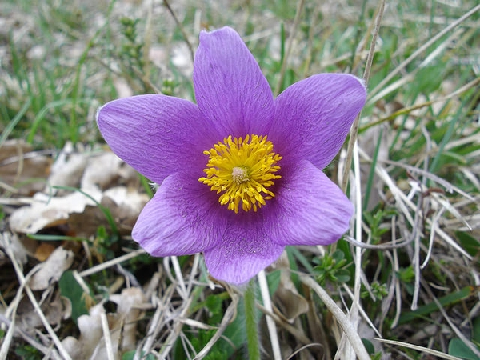
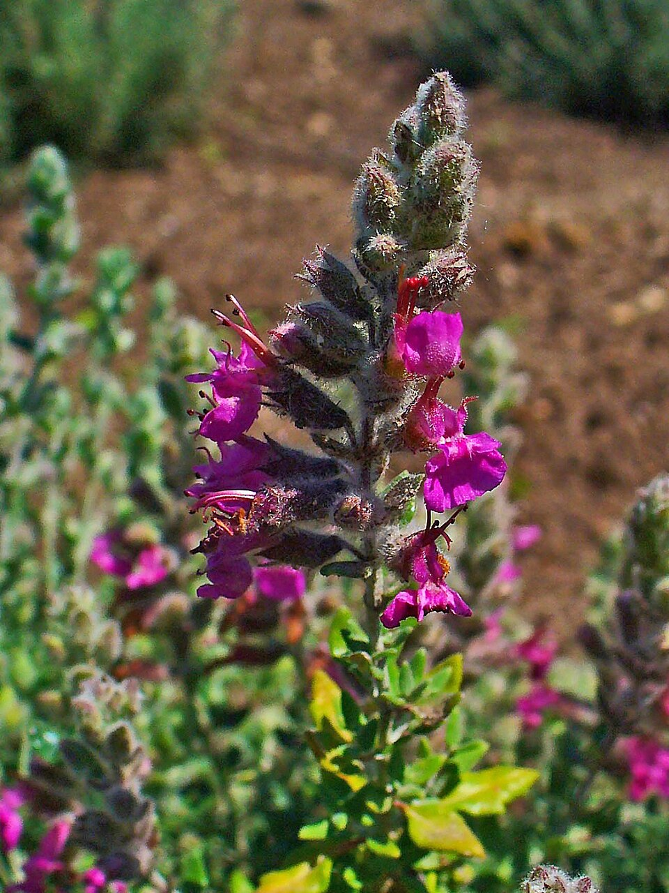
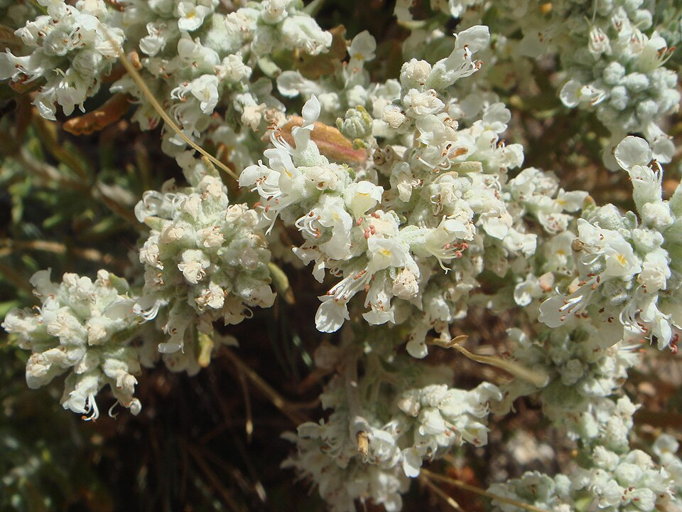
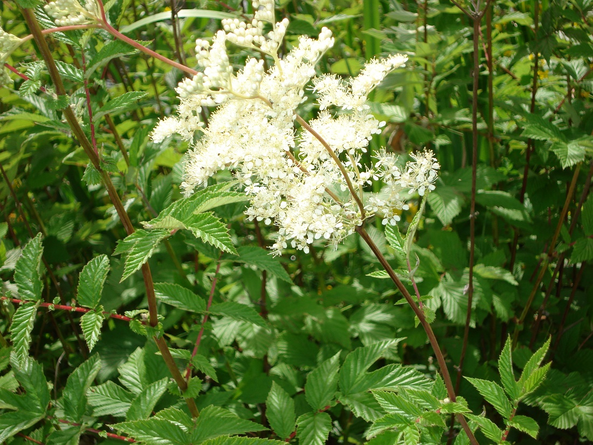
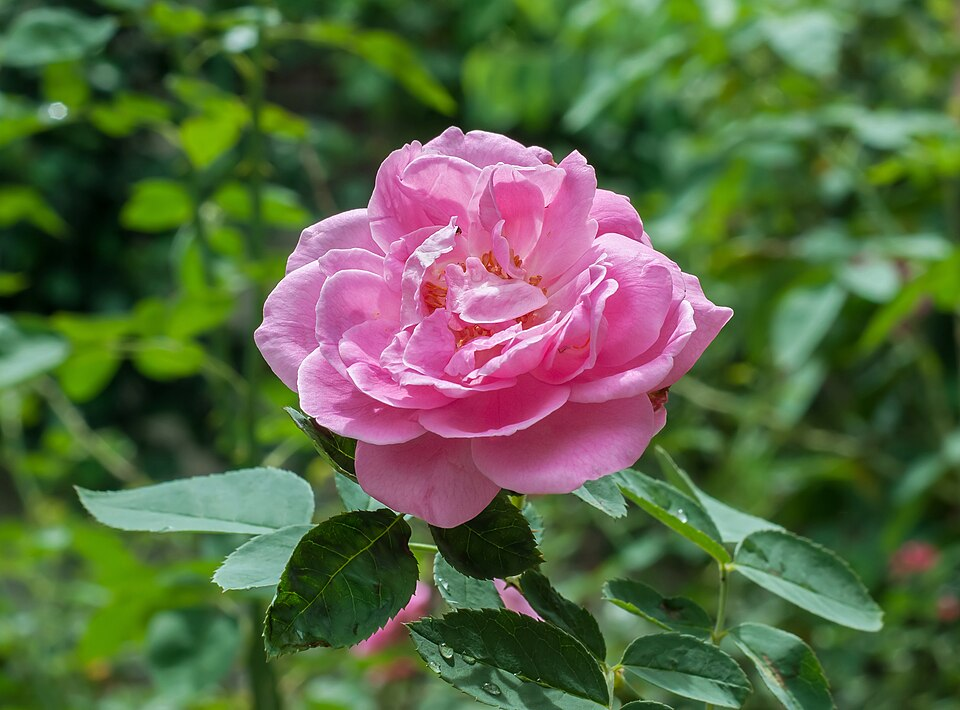
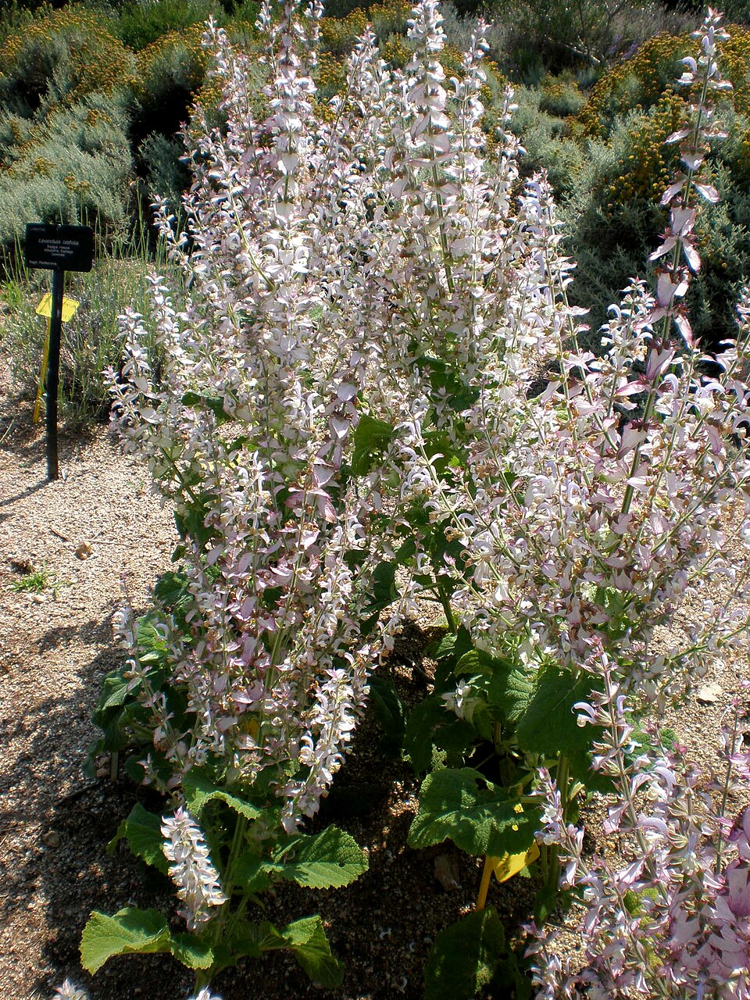
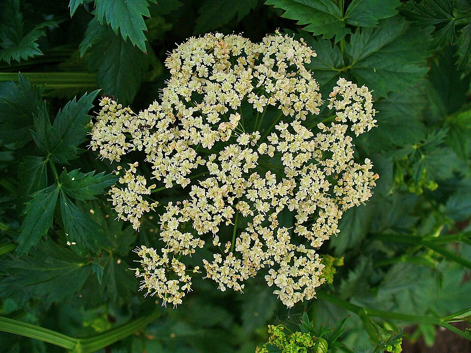
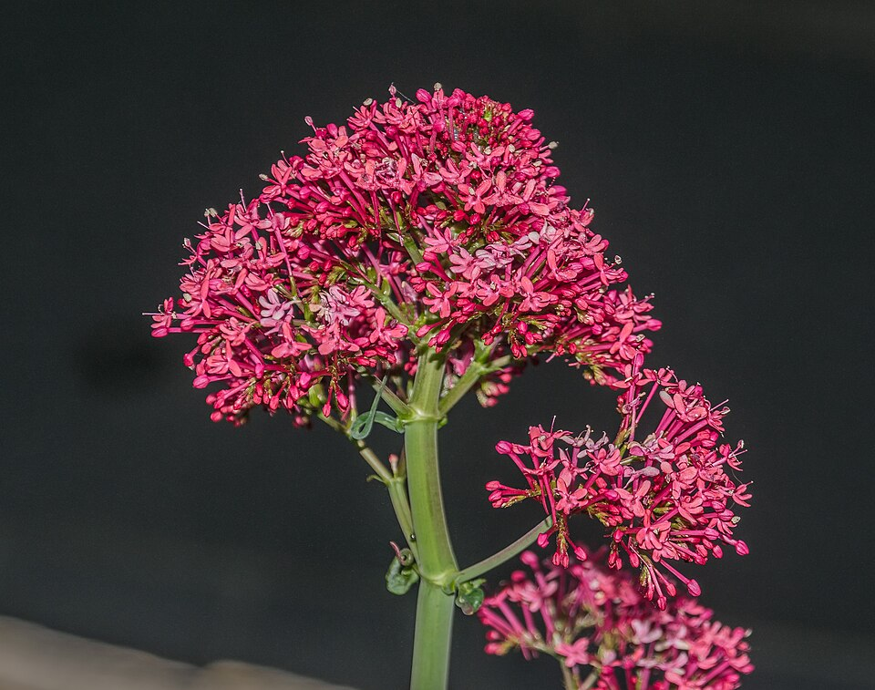
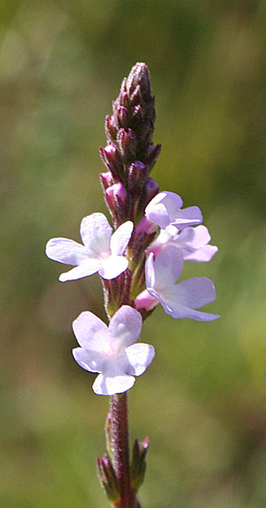
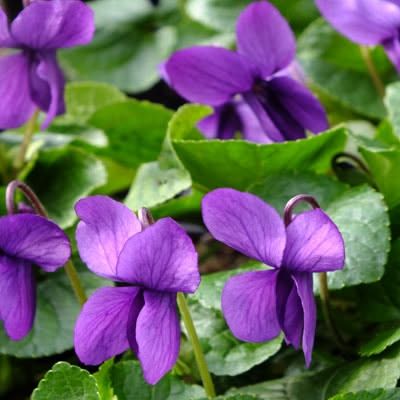

A
AAbrotano
Artemisia abrotanum
Arbusto aromatico del Mediterraneo, dal profumo di limone e canfora, usato in passato come erba da cucina e da giardino.
Cerca un'erba per nome: uso tradizionale, proprietà attribuite e avvertenze.
204 erbe
AArtemisia abrotanum
Arbusto aromatico del Mediterraneo, dal profumo di limone e canfora, usato in passato come erba da cucina e da giardino.
 A
ARumex acetosa
Erba perenne dal gusto acidulo, presente nei prati e usata nella cucina tradizionale europea.
 A
ARumex acetosella
Piccola erba dei terreni acidi e sabbiosi, riconoscibile per le foglie a forma di freccia. È il romice acetosella…
 A
AIl nome deriva dal mito di Achille, l'eroe della guerra di Troia. Secondo Plinio, il centauro Chirone consigliò ad…
 AO
AOAchillea moschata
Piccola achillea delle montagne alpine, con fiori bianchi e profumo intenso.
 A
ANel mondo greco-romano l'aglio era associato alla protezione e alla purificazione. I soldati romani lo portavano…
 A
AVitex agnus-castus
Arbusto mediterraneo le cui bacche piccanti erano usate nell'antichità per il benessere femminile.
 A
AConosciuta fin dall'antichità greca e romana. Il nome latino eupatoria deriva da Mitridate VI Eupatore, re del…
 A
ANota già a Dioscoride e Galeno, la pianta è diffusa in Asia, Europa e nel Mediterraneo. Nella tradizione simboleggia…
 A
AAlchemilla vulgaris
Erba dei prati di montagna dalle foglie palmate, legata nel Medioevo alla pratica dell'alchimia.
 A
AUsata fin dai tempi antichi per la medicazione delle piaghe. Nel 1666 Simon Pauli la descriveva come capace di…
 AA
AAAloe arborescens
Aloe arborescente, originaria del Sud Africa, coltivata in Italia e tradizionalmente usata nella medicina popolare.
 AV
AVAloe barbadensis miller
Pianta succulenta originaria della penisola arabica, diffusa nel bacino del Mediterraneo fin dall'antichità per il…
 A
AConosciuta anche come la Fata Verde, l'altea (Althaea officinalis) ha una lunga storia nelle tradizioni…

APDetta anche 'fiore del vento', è una delle prime piante a fiorire in primavera, spesso ancora sulla neve. Conosciuta…
 A
AGià usato dagli antichi Egizi, legato alla dea Iside. Greci e Romani lo consideravano un afrodisiaco e un rimedio…
 A
AAntennaria dioica
Piccola pianta bassa dei prati alpini, con fiori bianchi-rosati su steli sottili.
 A
AAnthyllis vulneraria
Leguminosa dei prati aridi, ricca di fiori gialli, conosciuta come erba delle ferite.
 A
AGalium aparine
Erba rampicante dei campi e delle siepi, con piccoli uncini che le permettono di aggrapparsi.
 AA
AAArtemisia annua
Artemisia dalle foglie finemente divise e dal profumo intenso, nota in Cina come pianta medicinale da secoli.
 AC
ACArtemisia vulgaris
Pianta aromatica dei margini delle strade, usata nella tradizione europea come erba da cucina e per le donne.
 A
AWithania somnifera
Arbusto della medicina ayurvedica indiana, dove la radice è usata da secoli come tonico.
 A
AAsparagus officinalis
Ortaggio selvatico delle coste e dei campi, la cui parte commestibile sono i giovani getti.
 A
A A
AAvena sativa
Cereale coltivato in Europa da secoli, usato come alimento e nella tradizione per il benessere della pelle.
 B
BBallota nigra
Lamiacea perenne europea, usata nella tradizione erboristica per nervosismo e tensione.
 B
BTanacetum balsamita
Erba aromatica dei giardini antichi, dal profumo di menta e di mentuccia.
 B
BArctium lappa
Pianta officinale dall'antichità. Le brattee uncinate hanno ispirato il velcro.
 B
BOcimum basilicum
Erba aromatica originaria dell'Asia tropicale, diffusa nel Mediterraneo e molto usata in cucina.
 B
BStachys officinalis
Il nome latino ha origine incerta. Nella tradizione romana era usata per numerosi disturbi.
 B
BBetula pendula
Nel Medioevo era chiamata 'pianta renale d'Europa' per il suo uso tradizionale sulle vie urinarie.
 B
BCrataegus monogyna, Crataegus laevigata
Nella tradizione è legato alla protezione e alla guarigione; in erboristeria è detto 'pianta del cuore'.
 B
BBistorta officinalis
Erba dei prati umidi di montagna, con spighe rosate e radice ritorta da cui prende il nome.
 BD
BDMelittis melissophyllum
Lamiacea dei boschi europei, con fiori bianco-rosati a forma di bocca aperta.
 B
BBorago officinalis
Erba annuale dei campi, con fiori blu a stella e foglie pelose, usata da secoli in cucina.
 BD
BDCapsella bursa-pastoris
Erba infestante dei campi e dei bordi di strada, riconoscibile dai piccoli frutti a forma di borsellino.
 B
B CC
CCEryngium campestre
Nella tradizione antica era indicata per coliche e flatulenze. La radice piccante è stata usata in alcune zone come…
 C
CCalendula officinalis
Fiore solare, usato fin dall'antichità in cosmesi e nella tradizione erboristica.
 C
CTeucrium chamaedrys
Piccolo arbusto dei terreni aridi, con fiori rosa e foglie simili a quelle della quercia.
 C
CAjuga chamaepitys
Piccola erba annuale dei campi, dal profumo resinoso quando si sfrega la pianta.
 C
CMatricaria chamomilla (sin. Matricaria recutita)
Usata nella tradizione erboristica europea. Il collegamento con la dea Artemide è una tradizione interpretativa, non…
 C
CGià citata nella Bibbia e usata dagli antichi Egizi nelle pratiche di imbalsamazione, la cannella è una delle spezie…
 C
CCynara cardunculus var. scolymus (sin. Cynara scolymus)
Ortaggio mediterraneo derivato dal cardo selvatico, con capolini carnosi molto apprezzati.
 CB
CBCnicus benedictus
Cardo annuale mediterraneo, con capolini spinosi e foglie ruvide, noto nella tradizione monastica.
 CM
CMSilybum marianum
Usato per secoli da guaritori e alchimisti, legato alla protezione e alla purificazione.
 C
C CS
CSDaucus carota
Antenata della carota coltivata, con infiorescenza bianca a ombrella e radice sottile.
 C
CCarpinus betulus
Albero dei boschi europei, con foglie dentate e frutti a ali, usato in passato per il legno e le foglie.
 C
CCarum carvi
Pianta biennale dei prati, il cui seme è una delle spezie più usate in cucina nordeuropea.
 C
CCastanea sativa
Albero dei boschi collinari, le cui foglie e i cui frutti sono usati da secoli nella tradizione europea.
 C
C C
CCeterach officinarum
Pianta dei muri e delle rocce, chiamata spaccapietra nella tradizione popolare per l'uso contro i calcoli. Altre…
 CM
CMCentaurium erythraea
Nella tradizione mitologica il nome deriva dal centauro Chirone: non è una prova dell'impiego storico della specie.…
 C
CPolygonum aviculare
Nota nella medicina popolare. Il nome comune 'sanguinaria' è ambiguo e usato per piante diverse.
 C
CAnthriscus cerefolium
Pianta alimentare probabilmente originaria del Caucaso e del Medio Oriente. La diffusione in Europa è attribuita ai…
 C
C C
CSalvia hispanica
Pianta della famiglia della menta, originaria del Messico, i cui semi erano usati dalle popolazioni precolombiane.
 C
CCichorium intybus
Pianta selvatica diffusa in tutta Europa, le cui radici tostate sono usate come succedaneo del caffè.
 C
CPrunus avium
Albero da frutto dei boschi e dei frutteti europei, con fiori bianchi in primavera.
 C
C C
CCupressus sempervirens
Conifera mediterranea dalla forma slanciata, usata come simbolo nei giardini e nelle tradizioni.
 C
CCochlearia officinalis
Pianta ricca di vitamina C, usata nella tradizione contro lo scorbuto. In ambito navale la prevenzione era legata…
 CC
CCEquisetum arvense
Un 'fossile vivente' le cui forme risalgono a 350-400 milioni di anni fa. Greci e Romani la usavano per disturbi…
 C
C C
CCoriandrum sativum
Erba aromatica annuale coltivata in tutta Europa, con foglie e semi molto usati in cucina.
 C
CNasturtium officinale
Pianta acquatica dei ruscelli di montagna, con foglie piccanti dal sapore pungente.
 C
C C
CCuminum cyminum
Nella tradizione popolare europea il cumino aveva usi simbolici, come l'uso nel pane. Per queste credenze servono…
 C
CCurcuma longa
Rizoma giallo-arancio originario dell'Asia meridionale, usato come spezia e nella medicina ayurvedica.
 D
DArtemisia dracunculus
Il nome 'dracunculus' significa 'piccolo drago', forse per le radici sinuose o per una credenza medievale sui morsi…
 E
EEchinacea pallida
Pianta delle praterie nordamericane, usata dai nativi americani per ferite e infezioni. Il nome deriva dal greco…
 ET
ETGlechoma hederacea
Piccola erba strisciante dei prati e dei bordi di strada, con fiori lilla.
 E
EEleutherococcus senticosus
Arbusto dell'Asia orientale, conosciuto come ginseng siberiano e usato nella medicina tradizionale russa e cinese.
 E
EHelichrysum italicum
Il nome deriva dal greco 'helios' (sole) e 'chrysos' (oro). Plinio il Vecchio lo cita nella Naturalis Historia.
 EC
EC E
EEpilobium parviflorum
Pianta erbacea diffusa in Europa, presente soprattutto in ambienti umidi. Il nome 'fireweed' è usato per Chamerion…
 EA
EAAngelica archangelica
Pianta aromatica dei luoghi umidi di montagna, usata nella tradizione erboristica europea. Il legame con i druidi…
 EB
EBGeum urbanum
Nel Medioevo l'erba benedetta era conosciuta nella tradizione erboristica europea. Il suo nome è stato associato a…
 EC
ECAllium schoenoprasum
Parente di aglio, cipolla e porro, è una delle erbe aromatiche più usate in cucina.
 EM
EMMedicago sativa
Coltivata da millenni come foraggio e pianta medicinale. Il nome alfalfa deriva dallo spagnolo, a sua volta dall'arabo.
 E
ECalluna vulgaris
Calluna vulgaris, detta brugo o brughiera. Non va confusa con le specie del genere Erica.
 EM
EMEryngium maritimum
Cresce sulle dune costiere. In epoca elisabettiana le sue radici erano candite come dolci.
 E
EHerniaria glabra
Piccola erba strisciante dei terreni sabbiosi, dai fiori minuscoli verdi. Il nome comune non indica un'efficacia nel…
 E
E F
FFicus carica
Apprezzato dagli antichi Egizi e considerato sacro a Roma. Gli atleti greci e romani lo usavano come alimento…
 FG
FGTrigonella foenum-graecum
Originario del Medio Oriente e dell'Asia. Il nome deriva dalla forma triangolare dei semi.
 F
FFoeniculum vulgare
Noto a Egizi, Greci e Arabi. Il nome deriva dal latino 'foenum' (fieno).
 FS
FSFragaria vesca
Piccola pianta dei boschi europei, con frutti profumati e foglie trifogliate.
 F
FFraxinus excelsior
Grande albero dei boschi europei, con foglie composte e corteccia grigia.
 FD
FDFraxinus ornus
Albero dei boschi mediterranei che produce una linfa zuccherina, la manna.
 F
F GN
GN G
G G
G G
GJuniperus communis
Arbusto sempreverde dei pascoli e delle brughiere, con bacche aromatiche usate come spezia.
 G
GLotus corniculatus
Leguminosa dei prati, con fiori gialli a forma di corno e foglie a tre foglioline.
 G
GLycium barbarum
Arbusto originario della Cina, i cui frutti rossi sono consumati da secoli nella medicina tradizionale cinese.
 G
GElytrigia repens
Nota fin dall'antichità come 'grano selvatico'. Dioscoride e Plinio la raccomandavano per le vie urinarie e i calcoli.
 GS
GSFagopyrum esculentum
Originario dell'Asia sudorientale, è arrivato in Europa nel Medioevo. Il nome 'saraceno' deriva dall'uso medievale…
 G
G G
GGynostemma pentaphyllum
Rampicante della Cina e del Sud-Est asiatico, usato come tè in quelle regioni, noto anche come jiaogulan.
 I
IImperatoria ostruthium
Erba alpina dalle ombrelle bianche e dalla radice aromatica, usata nelle antiche erboristerie.
 I
IHypericum perforatum
Citato da Ippocrate e Dioscoride; nel Medioevo detto 'erba di San Giovanni' perché fiorisce intorno al 24 giugno.
 I
IHyssopus officinalis
Dal termine ebraico 'esob', 'erba sacra'. Compare nella Bibbia e nella tradizione mediterranea.
 K
KKalanchoe daigremontiana
Pianta succulenta originaria del Madagascar, detta anche foglia della madre per le piantine che si formano sui bordi…
 LB
LBLamium album
Lamiacea dei bordi di strada e delle siepi, con fiori bianchi e foglie simili all'ortica.
 L
L L
L L
LLavandula angustifolia
Profumata e rilassante, è una delle erbe più diffuse in cosmesi e in erboristeria.
 L
LLycopus europaeus
Lamiacea delle rive e dei fossi, con foglie dentate e piccoli fiori bianchi.
 L
LLinum usitatissimum
Una delle prime piante addomesticate dall'uomo. Gli Egizi ne usavano le bende per la mummificazione.
 L
LGlycyrrhiza glabra
Secondo antiche leggende greche era un dono di Apollo all'umanità per alleviare la sete e le malattie.
 L
LHumulus lupulus
Rampicante delle siepi europee, con coni femminili usati nella birra e in tradizione.
 M
MLepidium meyenii
Pianta delle Ande peruviane, coltivata per la sua radice, usata nella tradizione andina come alimento energetico.
 M
MOriganum majorana
Chiamata nella tradizione 'erba della felicità' e della serenità domestica.
 M
MMalva sylvestris
Nelle regioni mediterranee e celtiche era usata in infusi rituali, ma soprattutto come pianta emolliente.
 M
MAlcea rosea
Nella tradizione antica era considerata una pianta benefica, soprattutto per le sue proprietà emollienti.
 M
MBellis perennis
Piccola margherita dei prati, con fiori bianchi e rosati su steli bassi.

MTeucrium marum
Piccolo arbusto mediterraneo dal profumo intenso, usato da secoli come aromatico.
 M
MMarrubium vulgare
Il nome deriva dall'ebraico 'mar' (amaro) e 'rob' (succo). Era una delle erbe amare della tradizione pasquale.
 M
MMelilotus officinalis
Il nome deriva dal greco 'meli' (miele). Anticamente usato in Campania per fare ghirlande.
 M
MMelissa officinalis
Galeno e Paracelso ne consigliavano l'uso come calmante. Nel Seicento i carmelitani scalzi crearono l'Acqua di Melissa.
 M
MMentha × piperita
Il nome deriva dal latino 'mentis' (mente). La menta piperita fu classificata nel 1696 dal botanico John Ray.
 MN
MNVaccinium myrtillus
Il nome 'Vaccinium' deriverebbe dal greco 'vakintos' (giacinto), per il colore delle bacche.
 MR
MRVaccinium vitis-idaea
Piccolo arbusto sempreverde dei boschi montani, con bacche rosse acidule.
 M
MMyrtus communis
Arbusto aromatico della macchia mediterranea, con bacche scure e foglie profumate.
 M
MMoringa oleifera
Albero originario dell'India, le cui foglie sono usate come alimento nelle regioni tropicali.
 N
NAzadirachta indica
Albero dell'India, detto albero della salute nella medicina ayurvedica, di cui si usano foglie, semi e olio.
 N
NCalamintha nepeta (sin. Clinopodium nepeta)
Il nome 'Calamintha' significa 'bella menta'. Nel Medioevo le furono attribuite virtù quasi miracolose.
 N
NCorylus avellana
Arbusto dei boschi e delle siepi, con nocciole e amenti gialli in inverno.
 N
N O
O O
O OC
OCUlmus minor
Albero delle siepi e dei campi europei, con corteccia scura e foglie ruvide.
 O
O ON
ONAlnus glutinosa
Albero delle rive e dei terreni umidi, con coni legnosi e foglie tondeggianti.
 O
OOriganum vulgare
Il nome deriva dal greco 'oros' (montagna) e 'ganos' (splendore). Noto fin dagli antichi Egizi.
 O
OUrtica dioica
Il nome deriva dal latino 'urere' (bruciare), per il effetto urticante delle foglie fresche.
 O
O PD
PDViburnum opulus
Arbusto dei boschi umidi, con grandi infiorescenze bianche e bacche rosse.
 P
PParietaria officinalis
Erba dei muri e delle rovine, con foglie lanceolate e piccoli fiori verdi.
 P
PThymus serpyllum
Il nome deriva dal greco 'herpyllos' (strisciare), per il portamento prostrato. Era già citato da Virgilio.
 P
PPlantago lanceolata, Plantago major
Il nome deriva probabilmente dal latino 'planta' (pianta del piede), per la forma delle foglie basali.
 P
PHieracium pilosella
Conosciuta da Greci e Romani. Il nome deriva dalla peluria che ricopre le foglie a rosetta.
 P
PSanguisorba minor
Il nome deriva dal latino 'piper' (pepe), per il suo antico uso come pianta aromatica.
 PM
PM PN
PN
P P
PPolypodium vulgare
Il nome deriva dal greco 'polys' (molti) e 'podos' (piedi), per le radichette del rizoma. Detta 'liquirizia di…
 P
PPulmonaria officinalis
Erba dei boschi con foglie maculate e fiori rosa che diventano blu.
 P
P P
PPortulaca oleracea
Erba succulenta infestante e commestibile, consumata come verdura in molte parti del mondo fin dall'antichità.
 PA
PAPotentilla anserina
Erba strisciante dei prati umidi, con foglie argentate e fiori gialli.
 P
P P
PPrimula
Secondo la tradizione popolare, la primula nacque dalle chiavi del Paradiso cadute dalle mani di San Pietro.
 P
P P
P P
PRuscus aculeatus
Piccolo arbusto sempreverde dei boschi, con foglie pungenti e bacche rosse.
 R
RArmoracia rusticana
Per il sapore piccante era considerato caldo dai medici antichi; nel Settecento era molto usato come digestivo e…

RDSpiraea ulmaria
Usata fin dall'antichità e dal Medioevo. Detta 'aspirina vegetale' perché contiene acido salicilico.
 RN
RNRibes nigrum
Originario dell'Europa settentrionale e dell'Asia; nel Novecento è stato chiamato 'perla della gemmoterapia'.
 R
RRumex obtusifolius
Erba alta dei campi e dei bordi di strada, con foglie larghe e spighe rosse.
 RC
RCRosa canina
Secondo una leggenda, il nome deriva dall'uso delle radici contro la rabbia.

RPRosa centifolia
Rosa antica dei giardini europei, con fiori molto profumati e petali fitti.
 RR
RRRosa officinalis
Secondo una leggenda greco-romana, Venere si ferì con una spina correndo in aiuto di Adone, tingendo di rosso le rose.
 R
RRosmarinus officinalis
Il nome deriverebbe dal latino 'ros marinus', rugiada del mare. Gli studenti greci ne intrecciavano rametti durante…
 R
RPapaver rhoeas
Simbolo del Remembrance Day. Nella tradizione contadina italiana i getti giovani, detti 'ròsole', erano raccolti…
 R
R R
RRubus fruticosus
Cresce spontaneo nei sottoboschi italiani fino a 2300 metri. Le more sono usate da secoli per marmellate e sciroppi.
 S
S SB
SB S
SSalicornia
Detta anche asparago di mare o fagiolo di mare. I marinai la portavano nei lunghi viaggi per gli infusi.
 S
SSalvia officinalis
Venerata dagli Egizi, consacrata a Zeus nell'antica Grecia e usata dai Romani per purificare case e templi.

SSSalvia sclarea
Salvia biennale dei prati, con grandi brattee rosate e profumo intenso.
 S
SSambucus nigra
Considerato sacro in molte culture europee ('pianta delle fate'). Lo sciroppo di fiori è diffuso soprattutto nel…
 S
SSanicula europaea
Erba dei boschi ombrosi europei, con foglie palmate e piccoli fiori bianchi.
 S
SSantolina chamaecyparissus
Piccolo arbusto argenteo del Mediterraneo, con fiori gialli a bottone e profumo resinoso.
 S
SSatureja
Nell'antica Grecia era usata nelle feste dedicate a Dioniso. Apprezzata nei secoli in cucina e nell'erboristeria…
 S
SAsplenium scolopendrium
Felce dalle foglie lucide e intere, che cresce nelle grotte umide.
 S
SApium graveolens
Il nome latino 'Apium' deriverebbe dal celtico 'apon' (acqua). Nota a Egizi, Greci e Romani.
 S
S SR
SR S
SPotentilla erecta
Il nome deriva dal latino 'potens', in riferimento alle sue presunte proprietà curative, usata nella medicina…
 S
SHeracleum sphondylium
In Svezia la radice era usata contro l'isteria e l'epilessia; in Russia per i disturbi digestivi.
 T
T T
TTilia platyphyllos
Albero dei viali e dei boschi europei, con fiori gialli profumatissimi in estate.
 T
TThymus vulgaris
Usato dagli Egizi nell'imbalsamazione, dai Greci nei bagni prima delle battaglie e dai Romani per purificare l'aria.

T TF
TFMenyanthes trifoliata
Erba acquatica dei torbiere e dei fossi, con foglie a tre foglioline e fiori bianco-rosati.
 TR
TRTrifolium pratense
Nelle tradizioni popolari era usato come simbolo di fortuna e protezione.
 UU
UUArctostaphylos uva-ursi
Arbusto strisciante dei terreni sabbiosi, con piccole foglie coriacee.
 V
VValeriana officinalis
Apprezzata per secoli in ambito medico. Il nome deriverebbe dal latino 'valere' (essere in salute).

VRCentranthus ruber
Pianta dei muri e dei bordi di strada, con fiori rosa-rossi profumati.
 V
VVerbascum thapsus
Lunga storia nella medicina popolare, soprattutto per le affezioni respiratorie.
 VO
VOAloysia citrodora
Originaria di Cile, Argentina e Perù, giunse in Europa nel Settecento. Detta anche cedrina o erba Luigia.

VOVerbena officinalis
Erba dei prati e dei bordi di strada, con piccole spighe di fiori lilla.
 VD
VD VO
VOVeronica officinalis
Usata in erboristica dal Medioevo, quando era nota come 'Herba Veronica Majoris'.
 VD
VDViola tricolor
Usata nel Medioevo e nel Rinascimento soprattutto per i disturbi della pelle.

VMViola odorata
Il parroco erborista Johann Künzle la usava per tosse e infiammazioni renali. Ildegarda di Bingen la indicava per la…
 VR
VR Z
ZZingiber officinale
Rizoma originario dell'Asia tropicale, usato come spezia e nella medicina ayurvedica e cinese.
 Z
ZCucurbita pepo
Simbolo di trasformazione e rinascita nelle tradizioni legate al ciclo delle stagioni.
Nessuna erba trovata. Prova con un altro termine.